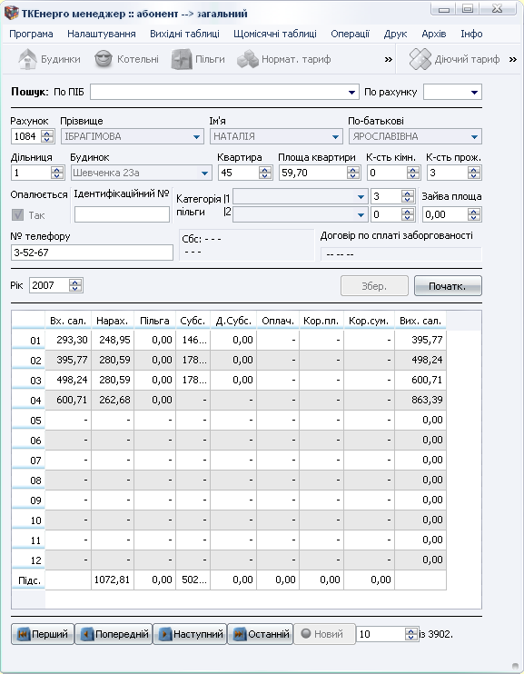
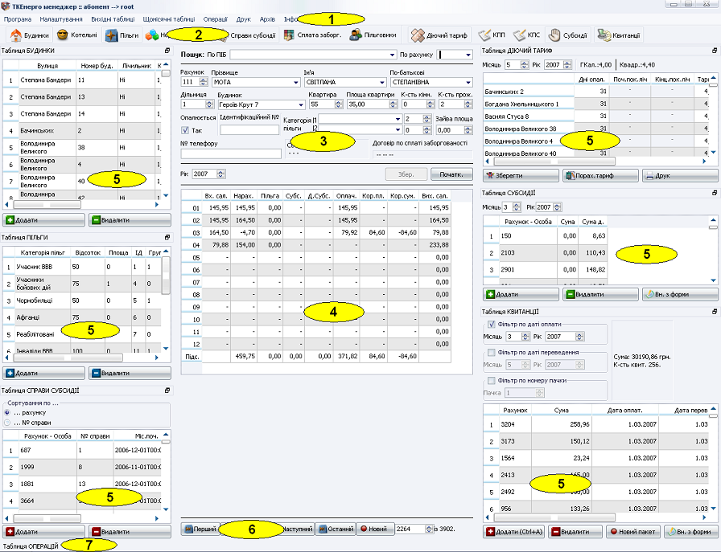
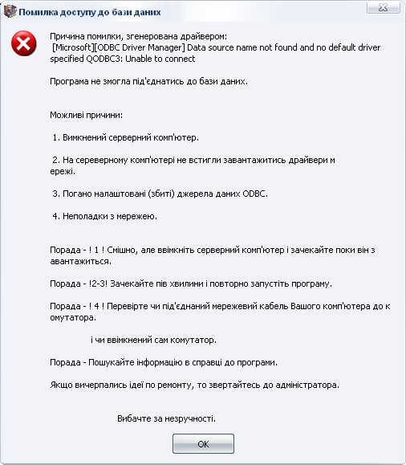

|
ТКЕнерго менеджер |
Домашня <-> ТКЕ абонент <-> ТКЕ організації <-> ТКЕ асистент <-> Контакти |
|
ТКЕнерго менеджер :: Абонент
|
|
Огляд. ТКЕнерго менеджер :: абонент” є частиною Системи упарвління ТКЕнерго менеджер, яка спеціалізована на роботі з фізичними особами – клієнтами підприємств теплових мереж. Дана програма була протестована реальною роботою впродовж сезону 2006-2007 років на ПТМ “Самбіртеплокомуненерго” в м.Самбір Львівської обл. Істотною її перевагоє є те, що вона не обмежується жодними часовими рамками, таким чином не потрібно буде “закривати рік” і зберігати багато архівів за усі роки роботи підприємства. Уся інформація про усі роки роботи з програмою зберігатиметься в єдиній базі даних, що дасть можливість обробляти інформацію беручи до уваги показники кількох років роботи одночасно. У можливості даної програми входить:
збереження інформації про котельні, будинки, абонентів, їх пільги і субсидії, угоди про сплату заборгованості, проплату по квитанціях, нарахування і донорахування субсидії, нормативні тарифи і діючі тарифи для кожного з будинків зокрема, справи субсидії, коректура по сумі (КПС), коректура по площі (КПП);
автоматичне нарахування оплати за ЦО враховуючи коректуру по сумі і по площі, дві пільги для кожного з абонентів (якщо необхідно), загальну площу будинку з лічильником та ін.;
перерахунок сальдо одного (усіх) абонентів як в межах року, так і в межах кількох років;
обмін інформацією з зовнішніми банками і організаціями шляхом втягування інформації з файлів(квитанції оплати в Ощадбанку і нарахування відділу субсидй) і експортування її у файли звітів (звіт у Соцстрах.);
друк різного роду документів (від квитанцій до звітів);
адхівування інформації про пачки квитанцій проплачених в Ощадбанку, які були внесені з електронних носіїв;
робота в мережевому форматі, коли використовуючи авторизаційну систему програми можна розподілити доступ до інформації і її редагування поміж різними користувачами таким чином, що, наприклад, економісти і програміст мають повний доступ до інформації, бухгалтери мають і директор мають можливість проглядати рахунки абонентів і друкувати вихідні документи, а інженер – лише переглядати рахунки абонентів.
Встановлення. Програмний комплекс “ТКЕнерго менеджер” процює за дворівневою системою “база даних – віконна оболонка”. При цьому, якщо один із рівнів - базу даних встановити на комп'ютері А, інший рівень – віконну оболонку на комп'ютер Б, комп'ютери А і Б мають мережне сполучення з підтримкою протоколів TCP/IP, а також “Клієнт для мереж Microsoft” і “Служба доступу до файлів і принтерів мереж Microsoft”, будемо мати мережно сконфігуровану програму з можливістю доступу до однієї бази даних багатьох операторів з різних комп'ютерів.
Робота з програмою. Програма встановлення Програмного комплексу “ТКЕнерго менеджер” передбачає створення іконок програми на робочому столі і в головному меню, таким чином, щоб завантажити програму необхідно клакнути по іконці з надписом ТКЕ абонент в одному з вищенаведених місць. Якщо в результаті завантаження програми на екрані з'явиться вікно

усі налаштування були зроблені вірно і програма готова до роботи. Отож, якщо Ви побачили дане вікно можна починати роботу.
Головне вікно програми, яке ми можемо бачити нижче можна умовно поділити на кілька частин: програмне меню (1), панель швидких кнопок (2), рахунок абонента (3) операції абонента (4), додаткові документні (табличні) вікна (5), кнопки навігації по рахунках (6), стрічка підказок (7).

У головному вікні усі кнопки швидкого доступу, які стосуються ввімкнення таблиць є прилипаючими, тобто коли відповідне додаткове вікно є видимим, його кнопка у натиснутому стані. Щоб видиме додаткове вікно приховати, необхідно клікнути по відповідній кнопці швидкого меню, при цьому воно закриється. Для відкривання додаткового вікна (якщо користувач має право згідно реєстрації на це) необхідно клікнути по відповідній кнопці. Також відкривати і закривати додаткові вікна можна з головного меню програми вибираючи в меню “Вихідні таблиці” “Щомісячні таблиці”. Додаткові вікна можна переміщувати вмонтовуючи у різні місця форми (як правило зверху, справа, зліва і знизу), а також залишаючи у вигляді окремого вікна поза головним вікном. Винести або занести вікно кудись можна “взявши його курсором” по його верхній панельці. Також для зручності роботи можна змінювати розміри вікна переміщуючи курсором його краї.
Помилки. При невірних або збитих налаштуваннях ODBC при завантаженні програма видасть повідомлення:

У такому разі необхідно відповідно до порад перерахованих у даному вікні спробувати усунути неполадку, а при неможливості виправити усі несправності з допомогою даних порад потрібно звернутися до утилітки налаштування ODBC і переналаштувати джерела даних ODBC.
|
© 2007 Компанія “УТЕХ” |
|
ТКЕнерго менеджер 1.0.1 |